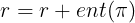

In multi-task learning and meta-learning, the goal is not just to learn one skill, but to learn a number of skills.
In multi-task RL, we assume that we want to learn a fixed set of skills with minimal data, while in meta-RL, we want to use experience from a set of skills such that we can learn to solve new skills quickly.
Can small differences in implementations of common multi-task and meta-RL algorithms make significant changes in algorithm performance?
Environments


Experiments
Reward Normalization
All of the environments that we try to train across have different scales of reward: Some range from 0-1,000, some from 0-10, some from 0-10,000. Increasing reward corresponds to improvement, the same reward in 2 environments doesn’t imply the same amount of improvement towards a task. The same optimizer is used to learn a policy across these different reward functions. An optimizer would fit a policy to whatever behaviors output the highest reward. What if we normalized our rewards so that they fall on similar reward scales?
In the graph above, RL^2 with reward normalization is ablated against RL^2 without reward normalization. The curves show that adding reward normalization the performance of RL^2 by ~15% (p=0.04) on the benchmark ML10.
Time Limit Terminations
Software implementers of RL algorithms frequently use a concept called
Time Limits,
to express the idea that a task has a finite time-horizon.
In many open source trusted algorithm implementations
it is expressed by injecting a terminal state at the end of an episode.
This has some nice properties when one implements RL algorithms in code,
such as reducing the amount of code needed to express a sampler.
The problem with this decision is that RL agents don’t have a concept of time.
Because the timestep number is normally not included as apart of the observation space,
RL agents are unable to determine whether a terminal state is caused by an environment
terminating due to the task being solved or whether too many timesteps
collected in an environment without resetting it to its initial
configuration [time limit termination].
By removing time limits from the Metaworld MT10 benchmark, the performance of MTSAC increases from ~30% to ~65%(p=0.05). This likely because as mentioned before, the addition of time limit terminations turns MDPs into POMDPs. RL algorithms heavily strugle with optimizing POMDPs, especially off policy algorithms such as MTSAC.
Max Entropy Rewards
Adding the entropy of the policy to the reward outputted by the environment, is a trick that is used to keep the width of the distributions outputted by policies wide. This result of this trick is best visualized by the below image.
Making the distributions wider is a good action because it makes the exploration of the agent better in the long-term, which leads to faster convergence on an optimal policy. The problem is that differing amounts of entropy are needed to solve the different tasks. High entropy is needed to solve difficult environments, but makes it difficult to solve easy environments, and vice versa. This experiment ablates a max-entropy RL^2 PPO against a vanilla RL^2 PPO and a max-entropy MTPPO against a vanilla MTPPO on the benchmarks ML10 and MT10 respectively.
Max entropy hurts the performance of RL^2 PPO (P = 0.006) and MTPPO (P=0.04)
A max-entropy solution that caters to MTRL and meta-RL would be one that has an entropy per learned
task.